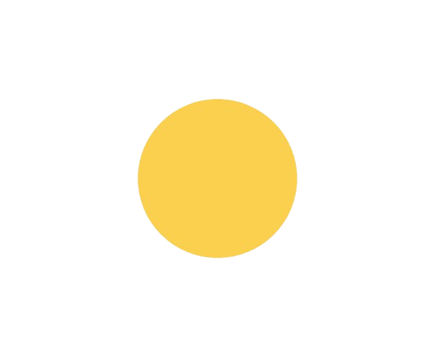

46.
Um fato correto sobre baratas é:
Elas comem muito pois se ficarem sem comer morrem rapido
O vomito de uma barata pode causar doenças
Uma barata prefere muito mais voar do que andar
Os besouros são parentes proximos da barata
Todos os direitos reservados © Hamilton, Guilherme, Gabriel e Arthur.